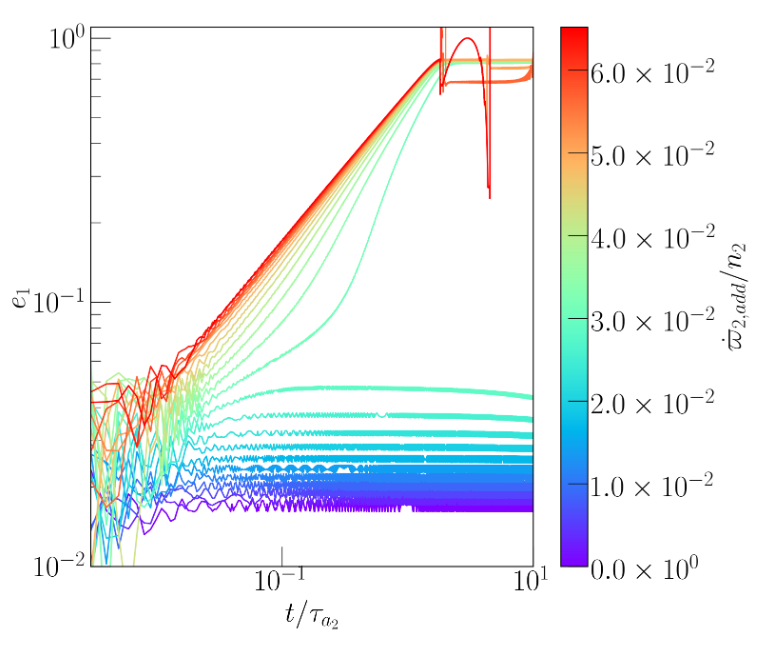

Mean motion resonances are common both in the solar system and in extrasolar systems. They occur when the ratio of two objects' orbital periods \( P_2/P_1 \) is a simple integer ratio. One way of capturing planets into these resonances is through disk-driven migration. In this scenario, the disk damps the eccentricity with a timescale \( \tau_e = e / \dot{e} \) and the semi-major axis of the planet with timescale \( \tau_a = a / \dot{a} \). The outcome of this capture is to asymptotically approach an equilibrium eccentricity given roughly as \( e_{eq} \approx \sqrt{\tau_e / \tau_a} \). We consider the case in which the precession exerted by the disk is considered. We find the equilibrium eccentricities are influenced by the differential precession rate \( \delta \dot{\omega} = \dot{\omega_2} - \dot{\omega_1} \) and increase with increasing differential precession. Eventually, when the differential precession rate becomes too large, the planets fail to capture into resonance and instead scatter.

Evolution of the eccentricity of the inner planet as a function of \( \delta \dot{\omega} \).